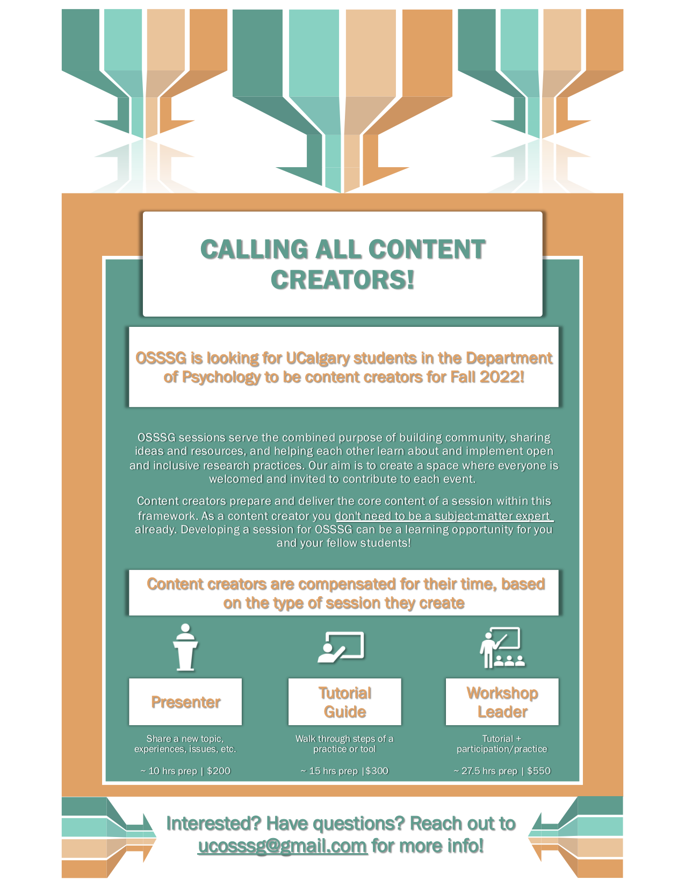

Open Science Student Support Group
Welcome to the Open Science Student Support Group website!
OSSSG (Oh! - Triple S – Gee) was founded in 2020 in the Department of Psychology, University of Calgary, by a group of graduate students eager to learn about different open science practices and support each other in implementing them in our own research.
See all the latest news and event information below, and explore the tabs above for all news and event information since we started OSSSG!

News
Events
No matching items